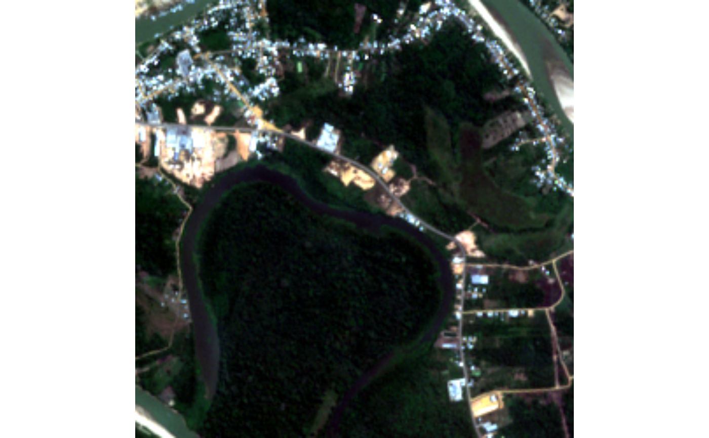

Example files installed with the package, used in the vignettes and
examples. They cover a 2.5 x 2.5 km crop over a meander of the Jurua
River, its floodplain and part of the town of Cruzeiro do Sul, in the
state of Acre, Brazil (approximate center: 7.649 S, 72.654 W). They are
not R objects: they are files, accessed with system.file().
Format
Four files in the package's extdata folder:
jurua_s2_20190816.tif,jurua_s2_20240814.tifCrops of Sentinel-2 L2A (Collection 1) images from 2019-08-16 and 2024-08-14, both cloud-free over the crop. Seven bands at 10 m (
B02,B03,B04,B05,B08,B11,B12; the 20 m bands were resampled with nearest neighbor), in UTM zone 18S (EPSG:32718). Original integer values from the provider: reflectance = (value - 1000) / 10000.jurua_dem_copernicus.tifCopernicus GLO-30 digital elevation model, reprojected to UTM zone 18S at 30 m. Elevation in meters.
jurua_plots.csv25 fictitious plots, randomly placed inside the crop, with the columns
plot,longitudeandlatitude(decimal degrees, WGS 84). For demonstration only.
Source
Earth Search (Element 84, AWS Open Data), collections
sentinel-2-c1-l2a and cop-dem-glo-30, accessed in October 2026.
Sentinel-2 data: Copernicus/ESA. DEM: Copernicus DEM, (c) DLR and
Airbus. The script that produced the files is data-raw/jurua.R in the
package repository.
Examples
folder <- system.file("extdata", package = "rsguide")
list.files(folder)
#> [1] "jurua_dem_copernicus.tif" "jurua_plots.csv"
#> [3] "jurua_s2_20190816.tif" "jurua_s2_20240814.tif"
img <- terra::rast(file.path(folder, "jurua_s2_20240814.tif"))
terra::plotRGB((img - 1000) / 10000, r = "B04", g = "B03", b = "B02", stretch = "lin")
